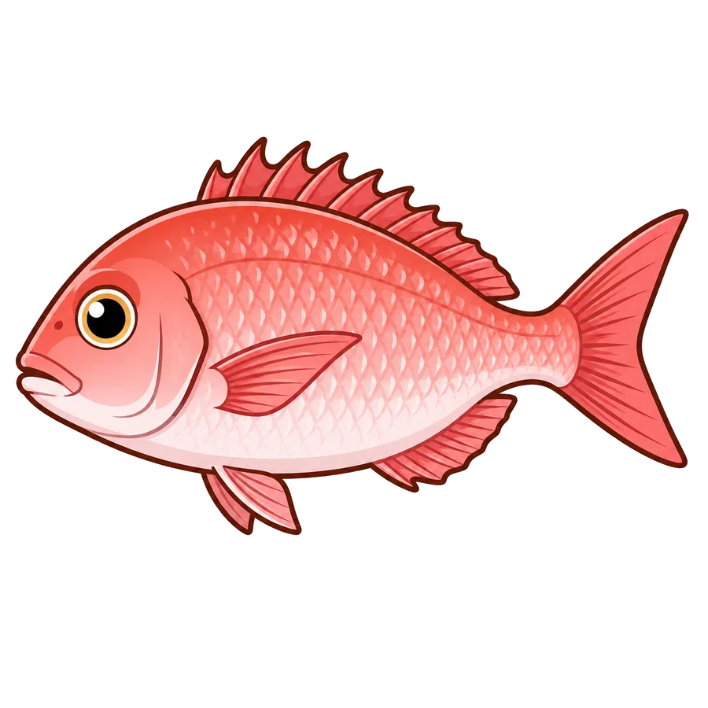
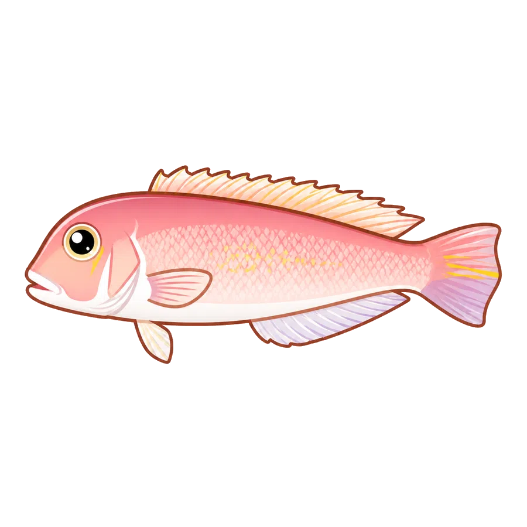

今週の傾向2026年5月17日〜5月23日（7日間）
出船率100%前週比 +0pt出船 6便 / 欠航 0便
🎣 今週の主要釣果
- マダイ4便前週比 -13便平均 5.5匹・最大 5.3kg
- アマダイ2便前週比 +2便平均 5.0匹・最大 42cm
🏆 今週の大物: マダイ 5.3kg(5/17)
📅 来週の見どころ (5/24-5/30)
シーズンマダイ：ノッコミ後期・産卵明けの荒食い最終週
シーズンアマダイ：シーズン後半・浅場狙い
潮回り5/29〜5/30 大潮 — 朝マズメ活性 UP 期待
📊 過去比較（同月）
2026年5月（5/23時点）
マダイ 28便（途中）
基本情報
所在地千葉県旭市飯岡3374
電話0479-57-2258
主要対象魚マダイ ・ アマダイ
定休日毎月第2火曜日
直近30日出船4日 / 欠航0日 (当サイトのクロール記録ベース・実出船日数とは異なります)
予約方法
※ 予約は船宿へ直接お電話ください。料金・空席状況・出船判断などは電話で確認するのが確実です。
最近の釣果実績（直近7日・船宿実績）

マダイ7〜18匹
5/145/155/165/175/185/195/20

アマダイ6〜10匹
5/145/155/165/175/185/195/20
広告スペース（レクタングル）
幸丸の明日の予測（準備中）
明日の主要魚種 — 信頼度 ★★★★★
XX〜XX匹
気象条件・潮通し分析より推定
月額500円で見る予定
飯岡港エリアの船宿ランキング（直近30日・釣果件数）
3位幸丸（このページ）6件
📊 月別釣果実績
過去13ヶ月の出船・釣果便数データ（毎月1日に前月分を自動追加）
2026年5月出船率100%
出船 30便 / 欠航 0便
- マダイ28便・平均4.2匹・最大7.1kg
- アマダイ2便・平均5.0匹・最大42cm
2026年4月出船率40%
出船 23便 / 欠航 34便
- マダイ22便・平均5.1匹・最大4.5kg
- アマダイ1便・平均4.0匹・最大40cm
2026年3月出船率90%
出船 79便 / 欠航 9便
- マダイ43便・平均4.6匹・最大6.9kg
- ヒラメ30便・平均2.4匹・最大6.0kg
- ヤリイカ5便・平均4.0匹・最大45cm
- マハタ1便・平均3.0匹・最大4.6kg
過去10ヶ月分の実績を表示（2026年2月〜2025年5月）
2026年2月出船率100%
出船 77便 / 欠航 0便
- マダイ26便・平均3.2匹・最大5.3kg
- ヒラメ26便・平均4.3匹・最大5.0kg
- ヤリイカ18便・平均11.9匹・最大50cm
- マハタ5便・平均5.2匹・最大6.3kg
- カンパチ2便・平均1.5匹・最大5.0kg
2026年1月出船率100%
出船 46便 / 欠航 0便
- ヒラメ20便・平均4.8匹・最大7.0kg
- マダイ15便・平均7.8匹・最大4.0kg
- ヤリイカ6便・平均14.8匹・最大50cm
- マハタ5便・平均6.8匹・最大6.2kg
2025年12月出船率100%
出船 77便 / 欠航 0便
- ヒラメ35便・平均4.7匹・最大5.3kg
- マダイ30便・平均7.2匹・最大5.8kg
- マハタ12便・平均2.3匹・最大5.8kg
2025年11月出船率100%
出船 96便 / 欠航 0便
- マダイ43便・平均10.2匹・最大6.5kg
- ヒラメ38便・平均4.7匹・最大5.1kg
- マハタ9便・平均2.8匹・最大5.3kg
- カツオ3便・平均5.0匹・最大6.0kg
- ヒラマサ3便・平均2.0匹・最大6.0kg
2025年10月出船率100%
出船 77便 / 欠航 0便
- マダイ45便・平均6.2匹・最大7.0kg
- ヒラメ25便・平均4.6匹・最大4.7kg
- カツオ7便・平均5.5匹・最大5.0kg
2025年9月出船率100%
出船 54便 / 欠航 0便
- マダイ37便・平均2.4匹・最大8.3kg
- ヒラメ17便・平均4.2匹・最大6.6kg
2025年8月出船率100%
出船 40便 / 欠航 0便
- マダイ24便・平均3.3匹・最大6.3kg
- ヒラメ14便・平均5.4匹・最大8.3kg
- ワラサ2便・平均3.5匹・最大5.0kg
2025年7月出船率100%
出船 17便 / 欠航 0便
- マダイ9便・平均2.6匹・最大3.3kg
- ヒラメ8便・平均4.0匹・最大3.3kg
2025年6月出船率100%
出船 35便 / 欠航 0便
- ヒラメ29便・平均1.9匹・最大9.1kg
- マダイ6便・平均2.8匹・最大4.3kg
2025年5月出船率100%
出船 6便 / 欠航 0便